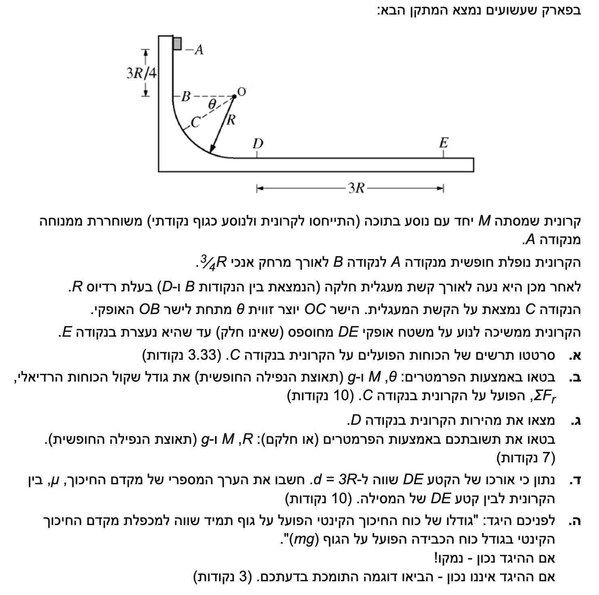

פתרון בגרות מוסבר: שימור אנרגיה ותנועה מעגלית
פיזיקה - מכניקה (5 יח"ל)
פתרון מודרך ומוסבר צעד-אחר-צעד, הכולל תרשימי כוחות וניתוח קינמטי
עודכן:
--- --:--:--
מבוא לבעיה והנחות יסוד
לפנינו בעיה קלאסית במכניקה המשלבת נפילה חופשית, תנועה מעגלית אנכית (ללא חיכוך) ותנועה בקו ישר על משטח מחוספס. הקרונית והנוסע מתוארים כגוף נקודתי בעל מסה \( M \), מה שמאפשר לנו להתעלם מאפקטים של מומנט התמד ולנתח את תנועת מרכז המסה בלבד.
תאוצת הכובד מוגדרת כחיובית: \( g = 10 \text{ m/s}^2 \).

[תמונת השאלה המקורית]
לא נמצאה תמונה בשם question-image.png באותה תיקייה.
מה נתון: הקרונית בעלת מסה \( M \) נמצאת בנקודה C על גבי קשת מעגלית חלקה (אין חיכוך). הישר OC יוצר זווית \( \theta \) מתחת לאופק OB. המסילה החלקה מפעילה על הגוף כוח רק בניצב למשטח.
מה מחפשים: לשרטט תרשים כוחות (FBD - Free Body Diagram) הפועלים על הקרונית בנקודה C.
נוסחאות ועקרונות בשימוש:
כוח הכובד: \( W = Mg \)
כוח נורמלי: \( N \)
עקרון הפעולה: כוח הכובד תמיד מצביע אנכית כלפי מטה (לכיוון מרכז כדור הארץ), והכוח הנורמלי שמפעיל המשטח תמיד מצביע בניצב למשטח מגע - במקרה של מעגל, הכיוון הוא רדיאלי כלפי המרכז O.
תרשים הכוחות:
להלן תרשים הכוחות המדויק על הקרונית בנקודה C. הציר הרדיאלי סומן בקו מקווקו המכוון למרכז המעגל.
מסקנה: התרשים כולל שני כוחות בלבד: \( N \) לכיוון המרכז, ו- \( Mg \) מטה.
טיפ מורה:
תלמידים רבים מתפתים להוסיף לתרשים "כוח צנטריפטלי" המכוון פנימה. חשוב להבין ש"כוח צנטריפטלי" (או כוח רדיאלי) אינו סוג של כוח בטבע! אין כוח פיזיקלי שנקרא כך. זהו בסך הכל תפקיד שממלאים כוחות אחרים (כמו הכוח הנורמלי או רכיבי כוח הכובד במקרה שלנו). לכן, בתרשים כוחות (FBD) אנו משרטטים אך ורק את הכוחות האמיתיים הפועלים על הגוף כתוצאה ממגע או משדה, ובהמשך מזהים מי מהם משמש ככוח הצנטריפטלי.
מה נתון: הקרונית משוחררת ממנוחה בנקודה A. כלומר, גודל המהירות ההתחלתית הוא \( v_A = 0 \). המרחק האנכי מנקודה A לנקודה B הוא \( \frac{3}{4}R \). לכן, אם נגדיר את הגובה של ציר OB כ- \( y = 0 \), הגובה ההתחלתי הוא \( y_A = \frac{3}{4}R \).
מה מחפשים: את גודל שקול הכוחות הרדיאלי בנקודה C, כלומר את הביטוי עבור \( \Sigma F_r \) מבוטא באמצעות הפרמטרים \( M, \theta, g \) בלבד.
נוסחאות ועקרונות בשימוש:
החוק השני של ניוטון: \( \Sigma \vec{F} = m \vec{a} \)
תאוצה רדיאלית: \( a_R = \frac{v^2}{R} \)
אנרגיה קינטית: \( E_k = \frac{1}{2}mv^2 \)
אנרגיה פוטנציאלית כובדית: \( U_G = mgh \)
משפט עבודה-אנרגיה: \( W_{\text{nc}} = \Delta E \)
מכיוון שהמסילה חלקה, עבודת הכוחות הלא משמרים (כוח הנורמל מאונך לתנועה ולכן לא מבצע עבודה) היא אפס (\( W_{\text{nc}} = 0 \)). לכן חל חוק שימור אנרגיה מכנית בין הנקודות A ו-C.
פתרון צעד-אחר-צעד:
ראשית, על פי החוק השני של ניוטון בתנועה מעגלית, שקול הכוחות בציר הרדיאלי שווה למסה כפול התאוצה הרדיאלית:
\[ \Sigma F_r = M a_R = M \frac{v_C^2}{R} \]
כדי למצוא את המהירות בנקודה C (\( v_C \)), נשתמש בחוק שימור אנרגיה בין הנקודה A לנקודה C. כדי לפשט את האלגברה ולהימנע מגבהים שליליים, נגדיר את מישור הייחוס לאנרגיה פוטנציאלית (\( h = 0 \)) בנקודה C, שהיא הנקודה הנמוכה ביותר בתנועה הנוכחית.
- בנקודה C: יש מהירות \( v_C \) והגובה מוגדר כאפס (\( h_C = 0 \)).
- בנקודה A: המהירות אפס (\( E_k = 0 \)). הגובה מורכב מהמרחק האנכי מנקודה C עד לקו האופקי OB (שהוא \( R \sin\theta \)) ועוד המרחק מקו OB לנקודה A (שהוא \( \frac{3}{4}R \)). לכן, \( h_A = \frac{3}{4}R + R \sin\theta \).
\[ E_A = E_C \]
\[ M g \left( \frac{3}{4}R + R \sin\theta \right) = \frac{1}{2} M v_C^2 + 0 \]
נצמצם את המסה \( M \) משני אגפי המשוואה:
\[ g \left( \frac{3}{4} R + R \sin\theta \right) = \frac{1}{2} v_C^2 \]
נחלץ את ריבוע המהירות, \( v_C^2 \), על ידי הכפלה ב-2 והוצאת גורם משותף \( R \):
\[ v_C^2 = 2 g \left( \frac{3}{4} R + R \sin\theta \right) \]
\[ v_C^2 = g R (1.5 + 2 \sin\theta) \]
כעת נציב את הביטוי שקיבלנו עבור \( v_C^2 \) לתוך משוואת הכוחות הרדיאלית \( \Sigma F_r = M \frac{v_C^2}{R} \):
\[ \Sigma F_r = M \frac{g R (1.5 + 2 \sin\theta)}{R} \]
\[ \Sigma F_r = M g (1.5 + 2 \sin\theta) \]
מסקנה: \( \Sigma F_r = M g (1.5 + 2 \sin\theta) \).
טיפ מורה: שימו לב לטעות נפוצה! תלמידים ממהרים לכתוב משוואת כוחות בציר הרדיאלי: \( \Sigma F_r = N - Mg \sin\theta \). למרות שהמשוואה נכונה פיזיקלית, היא לא עונה על השאלה, משום שגודל הכוח הנורמלי \( N \) אינו ידוע והוא אינו מופיע ברשימת הפרמטרים המותרים. לכן, הדרך היחידה למצוא את שקול הכוחות היא דרך האגף הימני של חוק ניוטון, כלומר חישוב התאוצה באמצעות שיקולי אנרגיה.
מה נתון: הנקודה D נמצאת בתחתית המסילה המעגלית. המסילה עדיין חלקה. המרחק מנקודה B (אשר באותו גובה כמו O) לנקודה D הוא בדיוק רדיוס המעגל, \( R \).
מה מחפשים: את גודל מהירות הקרונית בנקודה D, נסמנה \( v_D \), מבוטאת באמצעות הפרמטרים \( M, R, g \) או חלקם.
נוסחאות ועקרונות בשימוש:
משפט עבודה-אנרגיה (שימור אנרגיה): \( E_A = E_D \)
\( E_k = \frac{1}{2}mv^2 \)
\( U_G = mgh \)
חישוב:
שוב נשתמש בחוק שימור אנרגיה מכנית. הפעם, כדי למנוע גבהים שליליים, נגדיר את מישור הייחוס לאנרגיה הפוטנציאלית הכובדית בנקודה הנמוכה ביותר, כלומר בנקודה D (\( h_D = 0 \)).
נחשב את הגובה ההתחלתי של נקודה A ביחס לנקודה D. הגובה מורכב מהמרחק מ-O ל-D (שהוא הרדיוס \( R \)) ועוד המרחק מ-B ל-A (שהוא \( \frac{3}{4}R \)):
\[ h_A = R + \frac{3}{4}R = 1.75R \]
נשווה את האנרגיה המכנית הכוללת בנקודה A לאנרגיה בנקודה D:
\[ E_A = E_D \]
\[ M g (1.75R) + 0 = 0 + \frac{1}{2} M v_D^2 \]
נצמצם את המסה \( M \) (אנו רואים שהמהירות אינה תלויה במסה):
\[ 1.75 g R = \frac{1}{2} v_D^2 \]
\[ v_D^2 = 3.5 g R \]
\[ v_D = \sqrt{3.5 g R} \]
מסקנה: \( v_D = \sqrt{3.5 g R} \).
טיפ מורה: בחירת מישור הייחוס לאנרגיה (\( h=0 \)) היא שרירותית ונועדה לנוחות בלבד. בחירה בנקודה הנמוכה ביותר בתנועה (נקודה D) מבטיחה שכל הגבהים יהיו חיוביים, מה שמקטין משמעותית את הסיכוי לטעות בסימני פלוס ומינוס במהלך האלגברה.
מה נתון: המשטח DE אופקי ומחוספס. אורך המשטח הוא \( d = 3R \). הקרונית נכנסת לקטע זה במהירות \( v_D \) שחישבנו בסעיף הקודם, ונעצרת בנקודה E. כלומר, גודל המהירות בסוף הקטע קטן לאפס, \( v_E = 0 \).
מה מחפשים: את הערך המספרי של מקדם החיכוך הקינטי \( \mu_k \) בין הקרונית למשטח.
נוסחאות ועקרונות בשימוש:
משפט עבודה-אנרגיה: \( W_{\text{nc}} = \Delta E \)
עבודת כוח קבוע: \( W = F \Delta x \cos\theta \)
כוח חיכוך קינטי: \( f_k = \mu_k N \)
החוק הראשון של ניוטון בציר Y: \( \Sigma F_y = 0 \)
פתרון צעד-אחר-צעד:
נחשב תחילה את הכוח הנורמלי הפועל על הקרונית בקטע האופקי DE. כיוון שאין תנועה בציר האנכי, שקול הכוחות בציר זה הוא אפס:
\[ \Sigma F_y = N - M g = 0 \implies N = M g \]
לכן, כוח החיכוך הקינטי הפועל נגד כיוון התנועה הוא:
\[ f_k = \mu_k N = \mu_k M g \]
עבודת כוח החיכוך (שהוא הכוח הלא-משמר היחיד שמבצע עבודה לאורך ההעתק \( \Delta x = 3R \)) ניתנת על ידי:
\[ W_f = f_k \cdot (3R) \cdot \cos(180^\circ) = - (\mu_k M g) \cdot 3R = -3 \mu_k M g R \]
לפי משפט עבודה ואנרגיה, עבודת הכוחות הלא משמרים שווה לשינוי באנרגיה המכנית מ-D ל-E. האנרגיה הפוטנציאלית נשארת אפס משום שהמשטח אופקי:
\[ \Delta E = E_E - E_D = E_{k,E} - E_{k,D} \]
\[ \Delta E = 0 - \frac{1}{2} M v_D^2 \]
מסעיף ג', אנו זוכרים כי \( \frac{1}{2} M v_D^2 = 1.75 M g R \). נציב זאת במשוואה:
\[ -3 \mu_k M g R = - 1.75 M g R \]
נצמצם משני האגפים את הביטוי \( -M g R \) (ששונה מאפס):
\[ 3 \mu_k = 1.75 \]
\[ \mu_k = \frac{1.75}{3} = \frac{7/4}{3} = \frac{7}{12} \approx 0.583 \]
מסקנה: מקדם החיכוך הקינטי הוא \( \mu_k = 0.583 \).
טיפ מורה: שימו לב שזווית ה- \( \theta \) בנוסחת העבודה \( W = F \Delta x \cos\theta \) היא הזווית בין וקטור הכוח לווקטור ההעתק. עבור כוח החיכוך הקינטי שתמיד מנוגד לכיוון התנועה, הזווית היא תמיד \( 180^\circ \), ו- \( \cos(180^\circ) = -1 \). זו הסיבה שעבודת החיכוך פה היא תמיד שלילית וגורמת להקטנת האנרגיה המכנית.
מה נתון: מוצג ההיגד: "גודלו של כוח החיכוך הקינטי הפועל על גוף תמיד שווה למכפלת מקדם החיכוך הקינטי בגודל כוח הכבידה הפועל על הגוף (\( Mg \))."
מה מחפשים: לקבוע האם ההיגד נכון או שגוי, ולהביא נימוק או דוגמה תומכת לדעתנו.
נוסחאות ועקרונות בשימוש:
גודל כוח חיכוך קינטי: \( f_k = \mu_k N \)
העיקרון הפיזיקלי הוא שכוח החיכוך תלוי במידת ה"לחיצה" של הגוף אל המשטח, המיוצגת על ידי הכוח הנורמלי \( N \), ולא ישירות בכוח הכבידה של הגוף.
נימוק והוכחה:
ההיגד אינו נכון.
נוסחת החיכוך הקינטי היא אכן \( f_k = \mu_k N \). הכוח הנורמלי \( N \) שווה לכוח הכבידה \( Mg \) אך ורק במקרה הפרטי של תנועה על משטח אופקי שבו לא פועלים כוחות נוספים בציר האנכי (כפי שהיה לנו בסעיף ד').
דוגמה סותרת: נתבונן בגוף המחליק על גבי מישור משופע בעל זווית נטייה \( \alpha \). במקרה זה, אם נבחר ציר Y הניצב למישור, מתקיים שיווי משקל בציר זה מכיוון שאין תנועה בניצב למישור:
\[ \Sigma F_y = 0 \implies N - Mg \cos\alpha = 0 \implies N = Mg \cos\alpha \]
לכן, על המישור המשופע, כוח החיכוך הקינטי יהיה שווה ל:
\[ f_k = \mu_k (Mg \cos\alpha) \]
מכיוון ש- \( \cos\alpha < 1 \) (עבור זווית שאינה אפס), מקבלים כי \( f_k \neq \mu_k Mg \), מה שסותר את ההיגד הכללי.
מסקנה: ההיגד אינו נכון. כוח החיכוך תלוי בכוח הנורמלי \( N \), אשר עשוי להיות שונה מ- \( Mg \).
טיפ מורה: חשוב לזכור שהכוח הנורמלי (N) הוא כוח של "תגובה" מאלצת. המשטח מפעיל בדיוק את הכוח הדרוש כדי שהגוף לא יחדור לתוכו. לכן, ערכו של N משתנה בהתאם לזווית המשטח ואף בהתאם לכוחות חיצוניים נוספים שאולי לוחצים על הגוף מלמעלה או מושכים אותו כלפי מעלה. לעולם אל תניחו באופן אוטומטי ש- \( N = Mg \)!